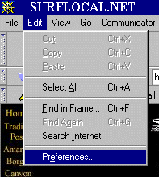

It's OK! It's EasyGuamto manually change it:
Guam
GuamGuamGuamGuamGuamGuamGuamGuamGuamGuamGuamGuamGuam1- ClickGuamon "Edit"GuamGuam
2- Click on "Preferences"Guam

3-TypeGuamin "http://www.surflocal.net/Guam"Guam
 Guam
Guam
Hit OK and Surflocal Dot Net is now your start page.